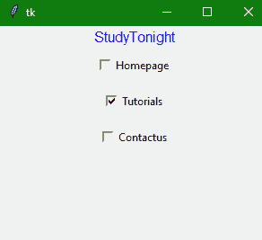

Tkinter Checkbutton小部件
原文：https://www.studytonight.com/tkinter/python-tkinter-checkbutton-widget
在本教程中，我们将介绍 Python 中的 Tkinter Checkbutton 小部件，它用于在使用 Tkinter 开发桌面应用时在 GUI 上创建复选框。
如果你想在一个表单中显示多个选项，用户可以勾选选择任意选项，我们可以使用 Tkinter Checkbutton 小部件。它允许您通过单击每个选项对应的按钮，一次选择多个选项或一个单个选项。
例如，在表单中，您可以看到填写性别的选项，它有“男性”、“女性”、“其他”等选项。，您可以在任何选项上打勾，这是一个复选框。我们使用 HTML 中的 <input>标签，来创建复选框
它可以包含文本或图像。根据您的要求，有许多选项可用于配置检查按钮部件。
Tkinter 检查按钮小部件
检查按钮小部件的语法如下:
w = CheckButton(master, option=value)
在上面的语法中，master参数表示父窗口。您可以使用许多选项来配置您的检查按钮小部件，这些选项被写成逗号分隔的键值对。
Tkinter 检查按钮小部件选项
以下是与检查按钮部件一起使用的各种选项:
| 选项名称 | 描述 |
|---|---|
activebackground |
该选项表示检查按钮在光标下时检查按钮的背景颜色。 |
bd |
该选项指示拐角周围边框的大小。默认大小为 2 像素。 |
bg |
该选项用于表示检查按钮的背景颜色。 |
bitmap |
该选项主要用于在按钮上显示图像。 |
command |
命令选项用于设置功能调用，该功能调用安排在检查按钮状态改变时进行。 |
activeforeground |
该选项主要代表当勾选按钮在光标下时按钮的前景色。 |
fg |
该选项代表检查按钮的文本颜色。 |
font |
此选项指示 checkbutton 的字体。 |
height |
该选项指示按钮的高度。这个高度在文本行的情况下表示文本行数，在图像的情况下表示像素数。默认值为 1 。 |
| 图像 | 该选项指示代表检查按钮的图像。 |
cursor |
该选项有助于在光标位于检查按钮上时将鼠标指针更改为光标名称。 |
disableforeground |
该选项是用于指示禁用检查按钮文本的颜色。 |
higlightcolor |
当焦点在检查按钮上时，此选项指示高亮颜色 |
justify |
该选项用于指示多条文本行的表示方式。对于左对齐，它设置为左对齐，对于右对齐，它设置为右对齐，对于中心对齐，它设置为中心对齐。 |
padx |
该选项指示检查按钮在水平方向上的填充。 |
pady |
该选项指示检查按钮在垂直方向上的填充。 |
underline |
该选项用于给检查按钮的文本加下划线。 |
width |
此选项指定 checkbutton 的宽度。对于文本按钮，它以若干字母的形式存在；对于图像按钮，它表示像素。 |
Wraplength |
在这种情况下，如果该选项被设置为整数，则文本将被分解为片段数。 |
variable |
该选项主要用于表示用来跟踪检查按钮状态的关联变量 |
offvalue |
如果按钮关闭，检查按钮的关联控制变量默认设置为 0。您也可以将未选中变量的状态更改为另一个。 |
onvalue |
检查按钮的关联控制变量设置为 1(开)。通过将 onvalue 设置为该值，将为 on 状态提供任何替代值。 |
text |
该选项用于指示检查按钮旁边的标签。对于多行，请使用“\n”。 |
state |
该选项主要用于表示检查按钮的状态。其默认值=正常。可以将其更改为禁用，以使 checkbutton 无响应。当 checkbutton 处于焦点下时，此按钮的值为 ACTIVE |
selectcolor |
该选项表示设置时检查按钮的颜色。其默认值为红色。 |
selectimage |
该选项设置后显示检查按钮上的图像。 |
Tkinter 检查按钮小部件方法:
以下是 checkbutton 小部件使用的方法:
| 方法名称 | 描述 |
|---|---|
invoke() |
checkbutton 小部件中的这个方法用于调用与 checkbutton 关联的方法。 |
select() |
checkbutton 小部件中的这个方法被称为来打开check button。 |
deselect() |
checkbutton 小部件中的这个方法叫做关闭check button。 |
toggle() |
checkbutton 小部件中的这种方法是用来在不同的 check button 之间切换。 |
flash() |
checkbutton 小部件中的这种方法用于在活动颜色和正常颜色之间闪烁。 |
Tkinter 检查按钮小部件示例
下面我们有一个这个小部件的基本例子来获得对这个方法的基本理解:
from tkinter import *
root = Tk()
root.geometry("300x300")
w = Label(root, text ='StudyTonight', fg="Blue",font = "100")
w.pack()
Checkbutton1 = IntVar()
Checkbutton2 = IntVar()
Checkbutton3 = IntVar()
Button1 = Checkbutton(root, text = "Homepage",
variable = Checkbutton1,
onvalue = 1,
offvalue = 0,
height = 2,
width = 10)
Button2 = Checkbutton(root, text = "Tutorials",
variable = Checkbutton2,
onvalue = 1,
offvalue = 0,
height = 2,
width = 10)
Button3 = Checkbutton(root, text = "Contactus",
variable = Checkbutton3,
onvalue = 1,
offvalue = 0,
height = 2,
width = 10)
Button1.pack()
Button2.pack()
Button3.pack()
mainloop()

正如您在上面的代码中看到的，创建了三个IntVar()变量，然后我们创建了三个检查按钮，具有不同的文本，如主页、教程和联系人。
因此，我们在这里使用一些选项创建了检查按钮，如text、variable、onvalue、offvalue、height和width。您可以尝试使用更多选项。
摘要
因此，在本教程中，我们学习了如何使用 Tkinter checkbutton 小部件在 GUI 应用中创建复选框。